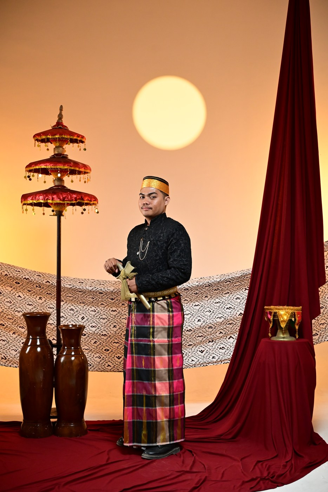
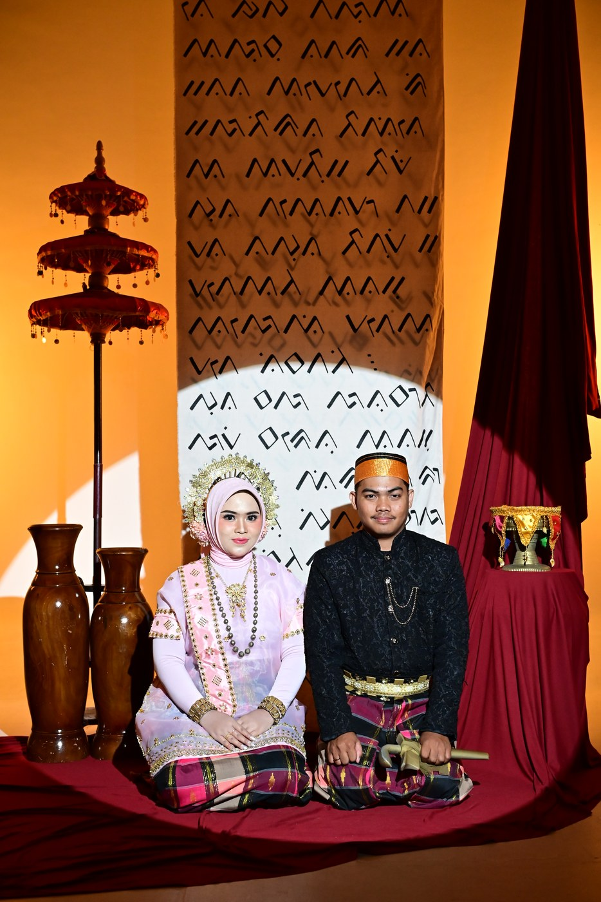
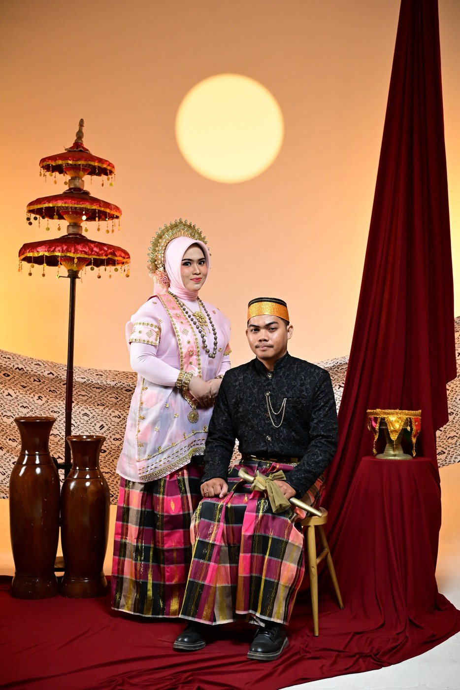
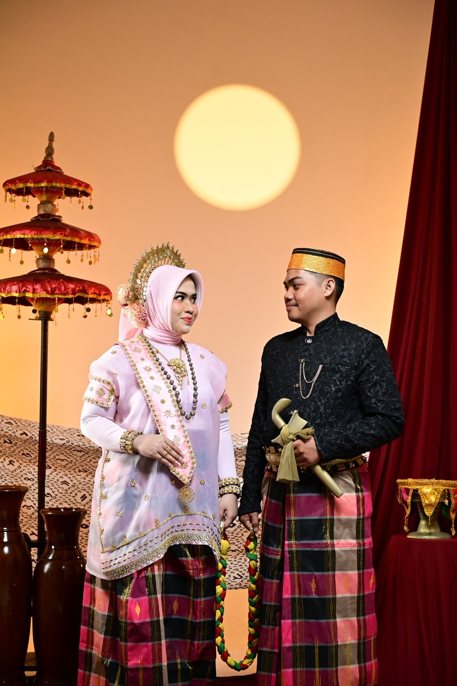
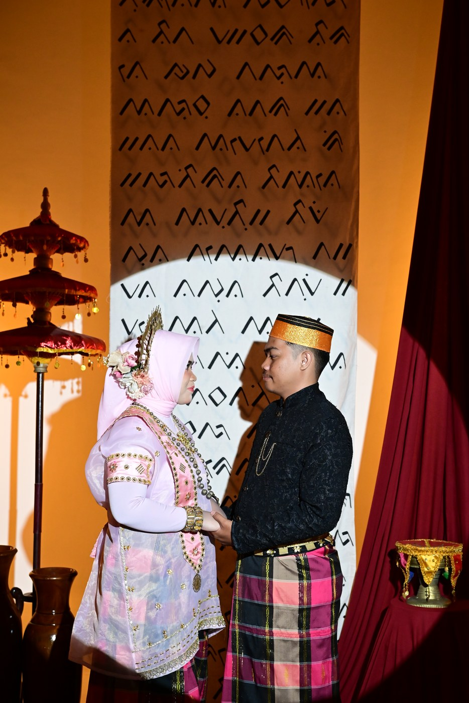
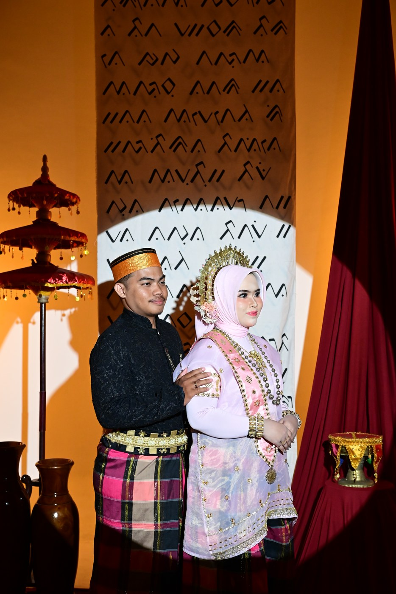
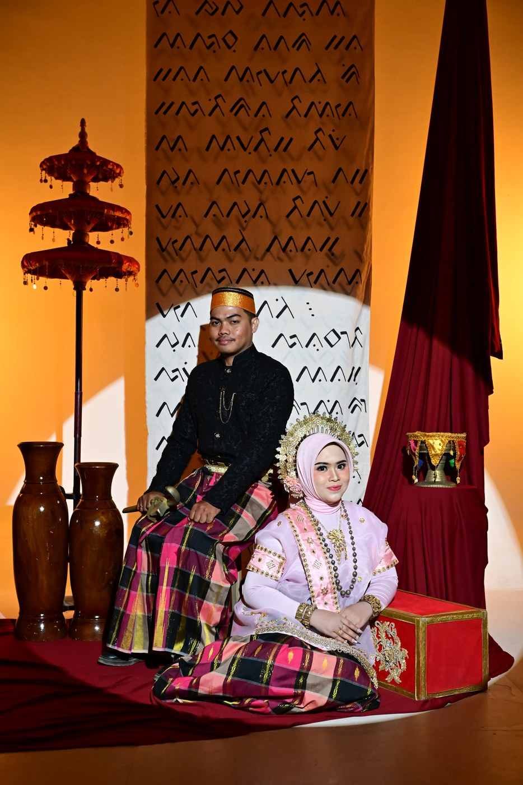
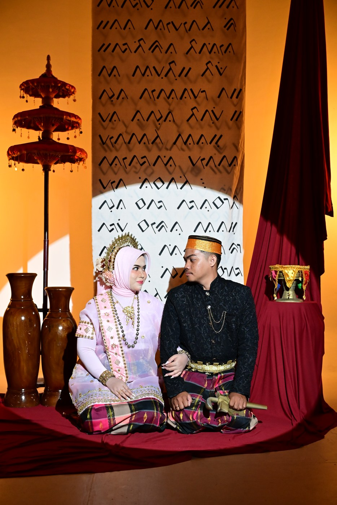
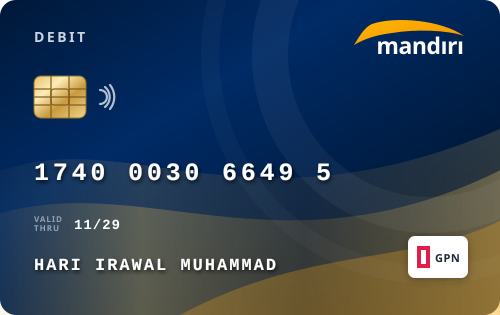

"Dan nikahkanlah orang-orang yang masih membujang di antara kamu, dan juga orang-orang yang
layak (menikah) dari hamba-hamba sahayamu yang laki-laki dan perempuan. Jika mereka miskin,
Allah akan memberi kemampuan kepada mereka dengan karunia-Nya. Dan Allah Maha Luas
(pemberian-Nya), Maha Mengetahui."
QS. An-Nur : 32
THE GROOM & THE BRIDE
Assalamu'alaikum Wr. Wb.
Maha Suci Allah SWT yang telah menciptakan makhluk-Nya berpasang-pasangan. Tanpa mengurangi rasa
hormat, kami mengundang Bapak/Ibu/Saudara/i serta kerabat sekalian untuk menghadiri acara
pernikahan kami:

Mempelai Pria
Hari Irawal Muhammad, S.Kom
Anak Ketiga dari Bapak Munir Husein Muhammad, S.Kom & Ibu Sitti Nurbaya
Kami berdua tidak direncanakan untuk bertemu, tapi dipertemukan oleh satu cinta yang sama.
Bukan cinta yang biasa, melainkan cinta yang berteriak lantang di tribun, cinta yang memakai
nama Indonesia. Ya, cinta terhadap Timnas Indonesia.

2023
MENJALIN HUBUNGAN
Di satu tempat yang menaungi ribuan rasa itu, di dalam keluarga besar bernama Ultras Garuda
Indonesia Sezione Makassar, akhirnya kami saling menemukan.

2025
LAMARAN
Dari chant yang sama, dari harapan yang sama, tumbuh rasa yang kini menjadi milik kami
berdua.

2026
PERNIKAHAN
Hingga akhirnya, dari tribun stadion kami berlabuh di tribun yang paling abadi: pelaminan.
MOMENTS OF HAPPINESS
Our Gallery
Potret kebersamaan dan kenangan manis dalam perjalanan cinta kami
Hari & Dilla
Langit Senja
Mahligai Kasih
Bersanding Bersama
Hari Irawal
Nurpadilla
Tatapan Kasih
Aksara Lontara

Harmoni Jiwa

Senyuman Abadi

Langkah Bersama
Mappasikarawa Adat

Menuju Keabadian
Amplop Digital
Doa restu Anda merupakan karunia yang sangat berarti bagi kami. Jika memberi adalah ungkapan tanda
kasih, Anda dapat memberikan kado dan tanda kasih secara cashless melalui:

Bank
Mandiri1740003066495
Kirim Hadiah Fisik
Bagi keluarga & sahabat yang ingin mengirimkan kado fisik, dapat
ditujukan ke alamat berikut:
Nama PenerimaHari Irawal Muhammad / Nurpadilla
No. HP / WhatsApp+62 815-2409-8247
Alamat LengkapGedung Serbaguna Aisyiyah, Jl. Jend. M. Jusuf / Jl. Gn. Bulusaraung No. 93, Kel. Pattunuang, Kec. Wajo, Kota Makassar, Sulawesi Selatan (90156)
Berikan doa restu dan konfirmasi kehadiran Anda untuk kedua mempelai
3 Ucapan & Doa
Masuk
Merupakan suatu kehormatan dan kebahagiaan bagi kami apabila Bapak/Ibu/Saudara/i berkenan hadir dan
memberikan doa restu. Atas kehadiran serta doa tulusnya, kami mengucapkan terima kasih yang tak
terhingga.